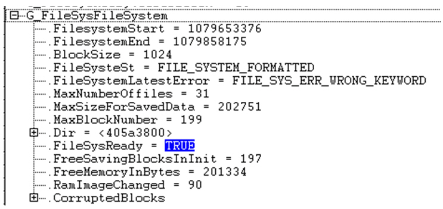
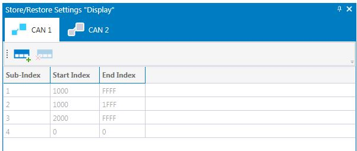

To use parameters, CANopen must be initialized.
Epec devices have non-volatile memory which is used to store parameters and to log information. Parameters are variables that are stored into non-volatile memory, they keep their values after boot up.
The parameter system is based on the CANopen Object Dictionary (OD). The Object Dictionary is an interface between the application and CAN bus. All variables, that should be accessible via CAN bus, have to be defined in the device's OD. MultiTool Creator automatically creates OD(s) and all needed platform specific initializations for Epec devices.
The possible variable types are:
- RAM: Variables exist only in the device’s RAM memory, on reboot the values return to default
- Parameter: A variable can be saved to the device’s non volatile memory
- Retain(*): Automatically written to the non-volatile memory, the value returns to default when a new application is downloaded. Supported for ArrayOf and Record index types.
- Retain Persistent(*): Automatically written to the non-volatile memory, the value is retained even if a new application is downloaded to the device. Supported for ArrayOf and Record index types.
- Safety Parameters(*): A variable can be saved to the device's non-volatile memory. Authentication is required to adjust safety parameters. Parameter validity is checked during every boot-up.
* The variable type possibilities depends on the hardware
Retain and Retain Persistent variables are automatically written to non-volatile memory. The following chapters do not apply to them.
The following chapters describe
the standard and application specific store/restore functionality for parameters
keyword protection of the parameter system
|
To use parameters, CANopen must be initialized. |
|
It is possible to use OD backup functionality for E series and S series devices. It can be taken into use from the MultiTool library manager. For more information, see Epec Programming & Libraries manual, section Using NVRAM. |
|
S series / E Series products do not use the file system library and the variable names differ from the names in this chapter. However, the functionality is the same. |
MultiTool Creator automatically creates a keyword protection for each application so that it is not possible to use of another application's parameters. The keyword is a fixed numeric value, stored in a global variable G_FileSysKeyWord. The keyword is created for each device that is added to a MultiTool Creator project. This value is saved to non-volatile memory together with parameters.
When the file system is initialized, this value is given for the file system and checked if it corresponds to the saved value. The keyword can mismatch, if a different application is downloaded to the device. If there is a mismatch, the file system is formatted and all parameters reset to their default values. Keyword mismatches can be seen after file system initialization in a Filesys librarys global variable G_FileSysFileSystem, as seen in the following image.

The CANopen standard defines two indexes for parameter handling: store and restore default parameter. The standard provides also manufacturer specific sub-indexes which are used in MultiTool Creator to define application specific storing and restoring index ranges.
Saving parameters into the device's non-volatile memory is done by store parameters index (1010h). By restore default parameters index (1011h) the default values of parameters are taken into use. The selected sub-index defines the parameter range to be saved / restored:
Sub-index 0 the amount of sub-indexes
Sub-index 1 refers to all parameters that can be stored on the device.
Sub-index 2 refers to communication related parameters (Index 1000h - 1FFFh manufacturer specific communication parameters)
Epec devices have communication parameters in index 2003h or 2150h, using sub-index 2 also saves these communication parameters when MultiTool Creator code template is used (except S Series / E Series).
Sub-index 3 refers to application related parameters (Index 2000h - FFFFh manufacturer specific application parameters)
Sub-indexes 4 - 127 manufacturers may define their own parameter groups
Sub-indexes 128-254 are reserved for future use
Storing and restoring parameters functionality is only executed when a specific signature is written to the appropriate sub-index. The signatures are "save“ and "load“ in ASCII, see the following tables.
Saving signature:
|
MSB |
|
|
LSB |
ASCII |
e |
v |
a |
s |
hex |
65h |
76h |
61h |
73h |
Restoring signature:
|
MSB |
|
|
LSB |
ASCII |
d |
a |
o |
l |
hex |
64h |
61h |
6Fh |
6Ch |
The CANopen standard defines the sub-indexes 1-3, Epec reserves the fourth sub-index. The application can use sub-indexes 5-127 to define the application specific store/restore areas.
To define the application specific store and restore areas, open the Object Dictionary tab and select icon. This will open the Store / Restore Settings (see the following image).
To add sub-indexes, select  icon. Then, define
the index range for storing/restoring to Start
and End Index.
icon. Then, define
the index range for storing/restoring to Start
and End Index.
To delete a sub-index, first select the sub-index and then delete icon.

See also,
Epec Programming and Libraries > Programming > Using NVRAM
Epec Programming and Libraries > Libraries > Common Libraries for Control Units > CANopenODSave
Epec Programming and Libraries > Libraries > Common Libraries for Safety projects > CANopenODSave
Epec Programming and Libraries > Programming > Saving/Restoring parameters
Epec Oy reserves all rights for improvements without prior notice.
Source file topic200085.htm
Last updated 25-Jun-2025